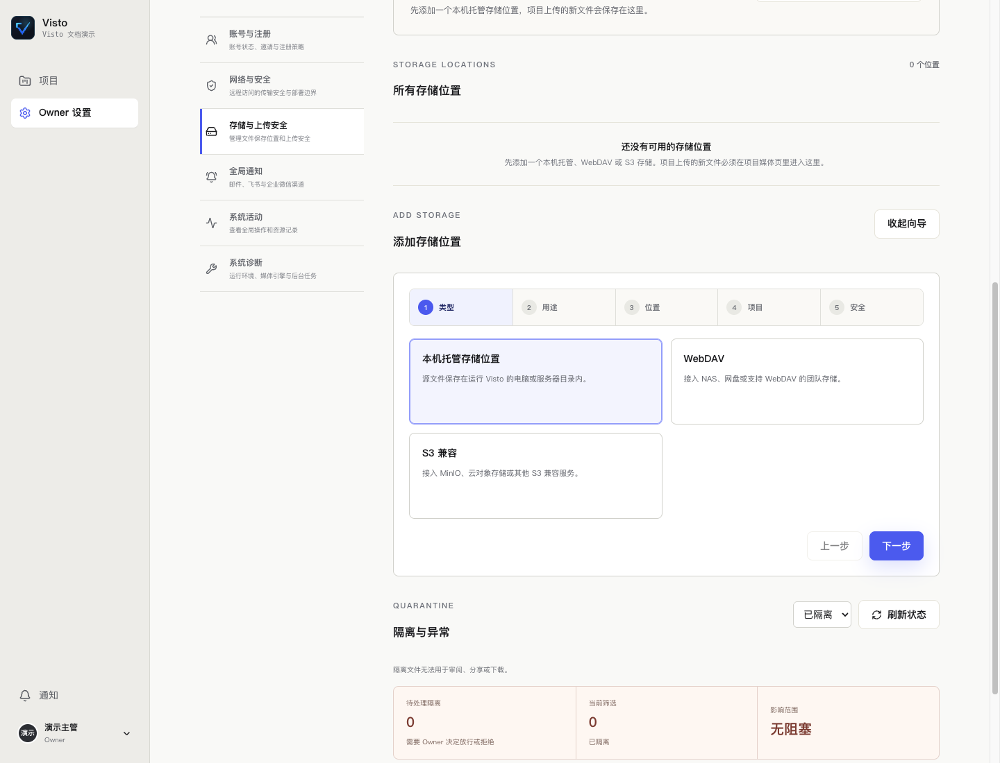

VISTO USER GUIDE / 11
配置文件保存位置
谁来操作： Owner。入口： Owner 设置 → 存储与上传安全。
Visto 需要先有可用且已开放的存储，项目才能选择上传落点。浏览器所在电脑的路径不等于服务器路径：主机目录始终指向运行 Visto 的电脑或容器可见目录。


看图操作： 上方查看现有保存位置和异常，下面的向导按“类型 → 用途 → 位置 → 项目 → 安全”依次完成。
三种存储选择
| 类型 | 要准备的信息 | 常见场景 |
|---|---|---|
| 本机托管存储 | 主机上的专用绝对目录、可写权限、空间 | 单机制作、连接在部署主机上的磁盘 |
| WebDAV | 服务地址、用户名、密码、允许的目录 | 支持 WebDAV 的 NAS 或存储服务 |
| S3 兼容 | Endpoint、Bucket、Region 及访问密钥等页面字段 | MinIO 或对象存储 |
使用最小必要权限的账号。远程连接先按页面测试连通性；网络策略可能拒绝某些地址，不能把地址填成可访问任意主机的代理。
本机存储：路径、权限和配额
名称用于让项目成员辨认，如“制作素材盘”；主机目录使用运行 Visto 的机器上的绝对路径。建议由维护者先建一个专用目录，给服务运行账号所需权限，再在向导填写；不要为了修复写入错误让所有人拥有整块磁盘的任意权限。
外接盘使用前确认它已挂载，盘名和路径稳定。Docker 中填写的是容器可见路径，宿主机目录需要由维护者正确挂载。容量配额留空时按页面含义不限制，并不意味着磁盘无限大。关注存储剩余空间，预览与备份也需要容量。
WebDAV：每个字段怎么填
| 字段 | 示例（虚构） | 填写要点 |
|---|---|---|
| 连接名称 | 团队 NAS · 制作资料 | 让项目主管能识别，不写密码 |
| 连接地址 | https://nas.example.com/dav |
使用服务提供的 WebDAV Endpoint，不填普通登录页 |
| 用户名 / 密码 | 独立的媒体服务账号 | 需有目标目录的读取及所需写入权限 |
| 默认路径前缀 | team-media 或留空 |
限定这条连接使用的范围，和服务器路径结构一致 |
| 允许连接局域网或内网地址 | 仅在需要接入可信 NAS 时启用 | 只授权你明确知道的内部存储服务 |
创建连接后按界面测试。连接通了但项目上传仍不可用时，继续检查根目录范围、项目开放和用途。修改既有凭据时读清页面“留空保留”说明，不误把密码清空。
S3 兼容：Endpoint、Bucket 与前缀
| 字段 | 示例（虚构） | 填写要点 |
|---|---|---|
| 连接地址 | https://s3.example.com |
使用存储商提供的 API Endpoint，不用控制台网页地址 |
| Access Key / Secret Key | 专用访问密钥 | 不截图、不写入项目说明，不用个人最高权限密钥 |
| 区域 | 存储商要求的 Region | 以服务实际配置为准，不复制其他供应商的值 |
| 桶名称 | team-media |
必须是已存在且该密钥有权访问的 Bucket |
| 默认路径前缀 | visto/brand-film |
限定对象范围，和实际组织约定一致 |
Endpoint、区域、桶与密钥要属于同一服务。测试失败时区分连通性、认证和对象权限，不连续换填猜测值。上述域名和桶名只用于解释字段，不能直接用作可连接的存储。
完成五步向导
- 类型： 选择本机、WebDAV 或 S3。
- 用途： 日常上传选“作为项目上传位置”；交付保存选“作为归档位置”；评论附件选对应用途。归档位置不会自动成为默认上传位置。
- 位置： 填可辨认的名称和相应连接信息。主机目录权限关闭时，本机路径不能在普通网页添加。
- 项目： 选择开放范围。保存一个连接不代表所有项目都获得使用权限。
- 安全： 选择上传安全策略并提交，查看成功或错误提示。
上传安全策略
| 策略 | 适合的使用情景 | 需要理解的边界 |
|---|---|---|
| 快速 | 可信素材和受控内部协作 | 保留路径、权限、大小等基础检查；恶意软件扫描可能记为未扫描 |
| 标准 | 日常默认项目上传 | 基础检查和媒体探测后处理；扫描结果继续影响分享与下载 |
| 增强 | 公网、访客或不可信来源素材 | 检查通过前不应进入可分享、可下载、可审阅状态；还要配置实际扫描能力 |
策略名称不代表扫描引擎已经配置。查看具体检查结果，“未扫描”不能当作“安全扫描通过”。
让项目真正能用
创建后检查存储显示“可用”，用途是上传，开放范围包括当前项目。进入 项目设置 → 项目存储 确认上传位置。若下拉框为空，依次检查：是否有活动存储、是否允许上传、是否对项目开放、是否因配额或错误停用。
修改、停用和删除
修改存储前先查看受影响项目。停用可能阻止后续上传；删除连接和删除原文件不是一回事，按影响说明处理。不要从操作系统直接挪走正在使用的目录；已有媒体引用可能失效。新增归档位置也不会自动把全部媒体复制过去。
完成检查： 项目能选到位置，上传小文件成功，预览可读，空间与权限符合预期。